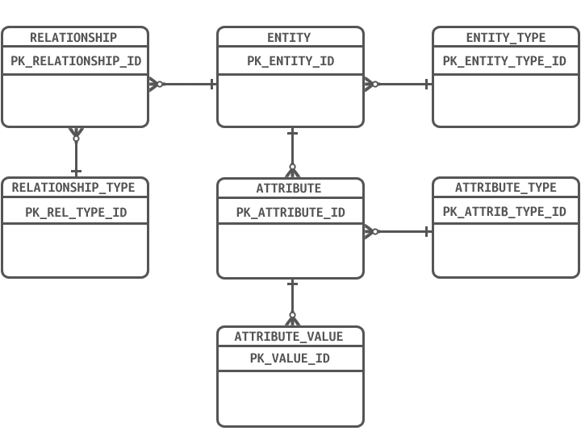

Entity Attribute Value Object Modeling
The Entity–Attribute–Value model is a design pattern to describe entities where the number of attributes (properties, parameter or columns) that can be used to describe them is potentially vast, but the number that will actually apply to a given entity is relatively modest. In mathematics, this model is known as a sparse matrix. EAV is also known as object–attribute–value model, vertical database model and open schema.

Figure 1.1 IDEF ER DiagramOne method for understanding this pattern is to review what has been refered to as the father of all models as illustrated to the right. What this model actually represents is an idea or concept that the nature and characteristics of all models regardless of implementation has it's origin in EAV.
EAV tables are often described as "long and skinny". "long" refers to the number of rows, "skinny" to the few columns.
Putting EAV in to Practice
Consider how one would try to represent a general-purpose clinical record in a relational database. Clearly creating a table (or a set of tables) with thousands of columns is not the way to go, because the vast majority of columns would be null. To complicate matters, in a longitudinal medical record that follows the patient over time, there may be multiple values of the same parameter: the height and weight of a child, for example, change as the child grows. Finally, the universe of clinical findings termed "domain of discourse or problem domain" keeps growing: for example, diseases such as SARS emerge, and new lab tests are devised; this would require constant addition of columns, and constant revision of the user interface.
In order to address concerns like these, implementing EAV modeling practices provide a lot of room to mitigate and offset the influence attribute volatility introduces into enterprise data models.
Note: The situation where the list of attributes changes frequently is termed "attribute volatility" in database parlance.
Example: The object below illustrates symptom findings that might be seen in a patient with pneumonia.
{
'patient': 'XYZ',
'datetime': '1/5/2014 9:30 AM',
'symptoms': [
{ 'TemperatureInDegreesFahrenheit': 102 },
{ 'PresenceOfCough': true },
{ 'TypeOfCough': 'With phlegm, yellowish, streaks of blood' },
{ 'HeartRateBPM': 98 },
{ 'HourlyBillingRate': 1033.25 },
{ 'BalanceDue': null },
]
}
If we were going to store this information in the above model, it is apparent that there is no need to add or even make adjustments to the structure of the data model because everything can be stored and described as demonstrated below
[Insert Data Grids Here]
Understanding Row Modeling
Row modeling is a methodology that is suitable for storing heterogeneous and evolving data sets. In essence, row modeling involves a column-to-row transformation; the attributes (or column headings) of the conventional column-modeled table are stored as data in the row-modeled table. A column-modeled table contains a column for every attribute. A row-modeled table contains one column that holds all attributes and one column that holds the values of the attributes. In a column-modeled table, one record holds a set of facts about specific data defined by the table and columns names of the object model, whereas in a row-modeled table, every record holds one particular fact about another fact. Additionally, a row-modeled table only holds those attributes for which a value actually has been recorded.
In row modeling, the data definition is not defined in the data tables themselves. The data definitions are stored separately and often are referred to as “metadata.” The advantage of separating the metadata from the physical data schema is that one eliminates the need to change the physical data structure when the data set changes, only the metadata content needs change. In a conventional column-modeled approach, metadata are held in table definitions and relations between tables.
we also need to discuss pivoting EAV objects in trasit or casting it to a strongly typed class object at runtime
To be continued...